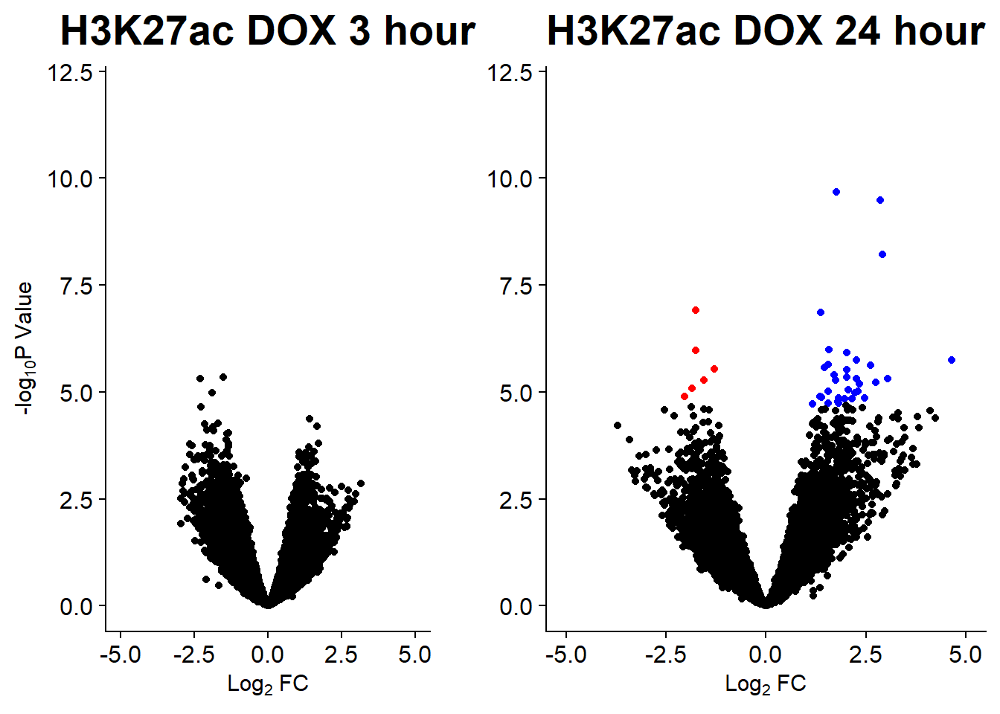
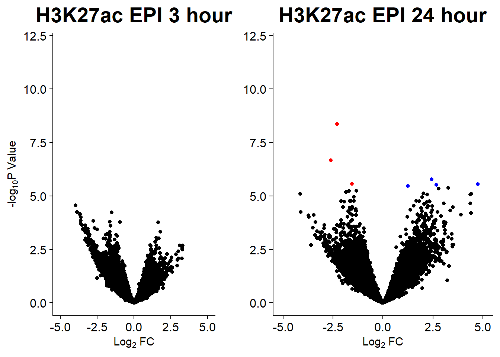

Raodah’s data
ERM
2024-12-16
Last updated: 2024-12-16
Checks: 7 0
Knit directory: ATAC_learning/
This reproducible R Markdown analysis was created with workflowr (version 1.7.1). The Checks tab describes the reproducibility checks that were applied when the results were created. The Past versions tab lists the development history.
Great! Since the R Markdown file has been committed to the Git repository, you know the exact version of the code that produced these results.
Great job! The global environment was empty. Objects defined in the global environment can affect the analysis in your R Markdown file in unknown ways. For reproduciblity it’s best to always run the code in an empty environment.
The command set.seed(20231016) was run prior to running
the code in the R Markdown file. Setting a seed ensures that any results
that rely on randomness, e.g. subsampling or permutations, are
reproducible.
Great job! Recording the operating system, R version, and package versions is critical for reproducibility.
Nice! There were no cached chunks for this analysis, so you can be confident that you successfully produced the results during this run.
Great job! Using relative paths to the files within your workflowr project makes it easier to run your code on other machines.
Great! You are using Git for version control. Tracking code development and connecting the code version to the results is critical for reproducibility.
The results in this page were generated with repository version 3267bc8. See the Past versions tab to see a history of the changes made to the R Markdown and HTML files.
Note that you need to be careful to ensure that all relevant files for
the analysis have been committed to Git prior to generating the results
(you can use wflow_publish or
wflow_git_commit). workflowr only checks the R Markdown
file, but you know if there are other scripts or data files that it
depends on. Below is the status of the Git repository when the results
were generated:
Ignored files:
Ignored: .RData
Ignored: .Rhistory
Ignored: .Rproj.user/
Ignored: data/ACresp_SNP_table.csv
Ignored: data/ARR_SNP_table.csv
Ignored: data/All_merged_peaks.tsv
Ignored: data/CAD_gwas_dataframe.RDS
Ignored: data/CTX_SNP_table.csv
Ignored: data/Collapsed_expressed_NG_peak_table.csv
Ignored: data/DEG_toplist_sep_n45.RDS
Ignored: data/FRiP_first_run.txt
Ignored: data/Final_four_data/
Ignored: data/Frip_1_reads.csv
Ignored: data/Frip_2_reads.csv
Ignored: data/Frip_3_reads.csv
Ignored: data/Frip_4_reads.csv
Ignored: data/Frip_5_reads.csv
Ignored: data/Frip_6_reads.csv
Ignored: data/GO_KEGG_analysis/
Ignored: data/HF_SNP_table.csv
Ignored: data/Ind1_75DA24h_dedup_peaks.csv
Ignored: data/Ind1_TSS_peaks.RDS
Ignored: data/Ind1_firstfragment_files.txt
Ignored: data/Ind1_fragment_files.txt
Ignored: data/Ind1_peaks_list.RDS
Ignored: data/Ind1_summary.txt
Ignored: data/Ind2_TSS_peaks.RDS
Ignored: data/Ind2_fragment_files.txt
Ignored: data/Ind2_peaks_list.RDS
Ignored: data/Ind2_summary.txt
Ignored: data/Ind3_TSS_peaks.RDS
Ignored: data/Ind3_fragment_files.txt
Ignored: data/Ind3_peaks_list.RDS
Ignored: data/Ind3_summary.txt
Ignored: data/Ind4_79B24h_dedup_peaks.csv
Ignored: data/Ind4_TSS_peaks.RDS
Ignored: data/Ind4_V24h_fraglength.txt
Ignored: data/Ind4_fragment_files.txt
Ignored: data/Ind4_fragment_filesN.txt
Ignored: data/Ind4_peaks_list.RDS
Ignored: data/Ind4_summary.txt
Ignored: data/Ind5_TSS_peaks.RDS
Ignored: data/Ind5_fragment_files.txt
Ignored: data/Ind5_fragment_filesN.txt
Ignored: data/Ind5_peaks_list.RDS
Ignored: data/Ind5_summary.txt
Ignored: data/Ind6_TSS_peaks.RDS
Ignored: data/Ind6_fragment_files.txt
Ignored: data/Ind6_peaks_list.RDS
Ignored: data/Ind6_summary.txt
Ignored: data/Knowles_4.RDS
Ignored: data/Knowles_5.RDS
Ignored: data/Knowles_6.RDS
Ignored: data/LiSiLTDNRe_TE_df.RDS
Ignored: data/MI_gwas.RDS
Ignored: data/SNP_GWAS_PEAK_MRC_id
Ignored: data/SNP_GWAS_PEAK_MRC_id.csv
Ignored: data/SNP_gene_cat_list.tsv
Ignored: data/SNP_supp_schneider.RDS
Ignored: data/TE_info/
Ignored: data/TFmapnames.RDS
Ignored: data/all_TSSE_scores.RDS
Ignored: data/all_four_filtered_counts.txt
Ignored: data/aln_run1_results.txt
Ignored: data/anno_ind1_DA24h.RDS
Ignored: data/anno_ind4_V24h.RDS
Ignored: data/annotated_gwas_SNPS.csv
Ignored: data/background_n45_he_peaks.RDS
Ignored: data/cardiac_muscle_FRIP.csv
Ignored: data/cardiomyocyte_FRIP.csv
Ignored: data/col_ng_peak.csv
Ignored: data/cormotif_full_4_run.RDS
Ignored: data/cormotif_full_4_run_he.RDS
Ignored: data/cormotif_full_6_run.RDS
Ignored: data/cormotif_full_6_run_he.RDS
Ignored: data/cormotif_probability_45_list.csv
Ignored: data/cormotif_probability_45_list_he.csv
Ignored: data/cormotif_probability_all_6_list.csv
Ignored: data/cormotif_probability_all_6_list_he.csv
Ignored: data/embryo_heart_FRIP.csv
Ignored: data/enhancer_list_ENCFF126UHK.bed
Ignored: data/enhancerdata/
Ignored: data/filt_Peaks_efit2.RDS
Ignored: data/filt_Peaks_efit2_bl.RDS
Ignored: data/filt_Peaks_efit2_n45.RDS
Ignored: data/first_Peaksummarycounts.csv
Ignored: data/first_run_frag_counts.txt
Ignored: data/full_bedfiles/
Ignored: data/gene_ref.csv
Ignored: data/gwas_1_dataframe.RDS
Ignored: data/gwas_2_dataframe.RDS
Ignored: data/gwas_3_dataframe.RDS
Ignored: data/gwas_4_dataframe.RDS
Ignored: data/gwas_5_dataframe.RDS
Ignored: data/high_conf_peak_counts.csv
Ignored: data/high_conf_peak_counts.txt
Ignored: data/high_conf_peaks_bl_counts.txt
Ignored: data/high_conf_peaks_counts.txt
Ignored: data/hits_files/
Ignored: data/hyper_files/
Ignored: data/hypo_files/
Ignored: data/ind1_DA24hpeaks.RDS
Ignored: data/ind1_TSSE.RDS
Ignored: data/ind2_TSSE.RDS
Ignored: data/ind3_TSSE.RDS
Ignored: data/ind4_TSSE.RDS
Ignored: data/ind4_V24hpeaks.RDS
Ignored: data/ind5_TSSE.RDS
Ignored: data/ind6_TSSE.RDS
Ignored: data/initial_complete_stats_run1.txt
Ignored: data/left_ventricle_FRIP.csv
Ignored: data/median_24_lfc.RDS
Ignored: data/median_3_lfc.RDS
Ignored: data/mergedPeads.gff
Ignored: data/mergedPeaks.gff
Ignored: data/motif_list_full
Ignored: data/motif_list_n45
Ignored: data/motif_list_n45.RDS
Ignored: data/multiqc_fastqc_run1.txt
Ignored: data/multiqc_fastqc_run2.txt
Ignored: data/multiqc_genestat_run1.txt
Ignored: data/multiqc_genestat_run2.txt
Ignored: data/my_hc_filt_counts.RDS
Ignored: data/my_hc_filt_counts_n45.RDS
Ignored: data/n45_bedfiles/
Ignored: data/n45_files
Ignored: data/other_papers/
Ignored: data/peakAnnoList_1.RDS
Ignored: data/peakAnnoList_2.RDS
Ignored: data/peakAnnoList_24_full.RDS
Ignored: data/peakAnnoList_24_n45.RDS
Ignored: data/peakAnnoList_3.RDS
Ignored: data/peakAnnoList_3_full.RDS
Ignored: data/peakAnnoList_3_n45.RDS
Ignored: data/peakAnnoList_4.RDS
Ignored: data/peakAnnoList_5.RDS
Ignored: data/peakAnnoList_6.RDS
Ignored: data/peakAnnoList_Eight.RDS
Ignored: data/peakAnnoList_full_motif.RDS
Ignored: data/peakAnnoList_n45_motif.RDS
Ignored: data/siglist_full.RDS
Ignored: data/siglist_n45.RDS
Ignored: data/summary_peakIDandReHeat.csv
Ignored: data/test.list.RDS
Ignored: data/testnames.txt
Ignored: data/toplist_6.RDS
Ignored: data/toplist_full.RDS
Ignored: data/toplist_full_DAR_6.RDS
Ignored: data/toplist_n45.RDS
Ignored: data/trimmed_seq_length.csv
Ignored: data/unclassified_full_set_peaks.RDS
Ignored: data/unclassified_n45_set_peaks.RDS
Ignored: data/xstreme/
Ignored: trimmed_Ind1_75DA24h_S7.nodup.splited.bam/
Untracked files:
Untracked: Correlationplot_scaled.pdf
Untracked: DOX_DAR_assess.Rmd
Untracked: EAR_2_plot.pdf
Untracked: ESR_1_plot.pdf
Untracked: Firstcorr plotATAC.pdf
Untracked: IND1_2_3_6_corrplot.pdf
Untracked: LR_3_plot.pdf
Untracked: NR_1_plot.pdf
Untracked: analysis/Expressed_RNA_associations.Rmd
Untracked: analysis/LFC_corr.Rmd
Untracked: analysis/SVA.Rmd
Untracked: analysis/Tan2020.Rmd
Untracked: analysis/my_hc_filt_counts.csv
Untracked: code/IGV_snapshot_code.R
Untracked: code/LongDARlist.R
Untracked: code/MRC_clusterlog2cpm.R
Untracked: code/TSSE.R
Untracked: code/just_for_Fun.R
Untracked: code/toplist_assembly.R
Untracked: dataredo.RData
Untracked: lcpm_filtered_corplot.pdf
Untracked: log2cpmfragcount.pdf
Untracked: output/cormotif_probability_45_list.csv
Untracked: output/cormotif_probability_all_6_list.csv
Untracked: output_1_Mecom.txt
Untracked: splited/
Untracked: trimmed_Ind1_75DA24h_S7.nodup.fragment.size.distribution.pdf
Untracked: trimmed_Ind1_75DA3h_S1.nodup.fragment.size.distribution.pdf
Unstaged changes:
Modified: analysis/JustTE_analysis.Rmd
Note that any generated files, e.g. HTML, png, CSS, etc., are not included in this status report because it is ok for generated content to have uncommitted changes.
These are the previous versions of the repository in which changes were
made to the R Markdown (analysis/Raodah_mycount.Rmd) and
HTML (docs/Raodah_mycount.html) files. If you’ve configured
a remote Git repository (see ?wflow_git_remote), click on
the hyperlinks in the table below to view the files as they were in that
past version.
| File | Version | Author | Date | Message |
|---|---|---|---|---|
| html | cfe4ce9 | reneeisnowhere | 2024-10-23 | Build site. |
| Rmd | a9d87d2 | reneeisnowhere | 2024-10-23 | wflow_publish("analysis/Raodah_mycount.Rmd") |
| html | 4881ad6 | reneeisnowhere | 2024-10-07 | Build site. |
| Rmd | 628986a | reneeisnowhere | 2024-10-07 | pdf output |
| html | 50f603e | reneeisnowhere | 2024-09-23 | Build site. |
| Rmd | a55255a | reneeisnowhere | 2024-09-23 | adding in Raodah evaluation |
| Rmd | 82f2027 | reneeisnowhere | 2024-09-16 | updates to plots |
library(tidyverse)
library(kableExtra)
library(broom)
library(RColorBrewer)
# library(ChIPseeker)
# library("TxDb.Hsapiens.UCSC.hg38.knownGene")
# library("org.Hs.eg.db")
library(rtracklayer)
library(edgeR)
# library(ggfortify)
library(limma)
library(readr)
library(BiocGenerics)
library(gridExtra)
library(VennDiagram)
library(scales)
library(Cormotif)
library(BiocParallel)
library(ggpubr)
library(devtools)
library(eulerr)
library(genomation)
library(ggsignif)
library(plyranges)
library(ggrepel)
library(ComplexHeatmap)
library(smplot2)
library(stringr)
library(cowplot)drug_pal <- c("#8B006D","#DF707E","#F1B72B", "#3386DD","#41B333")
pca_plot <-
function(df,
col_var = NULL,
shape_var = NULL,
title = "") {
ggplot(df) + geom_point(aes_string(
x = "PC1",
y = "PC2",
color = col_var,
shape = shape_var
),
size = 5) +
labs(title = title, x = "PC 1", y = "PC 2") +
scale_color_manual(values = c(
"#8B006D",
"#DF707E",
"#F1B72B",
"#3386DD",
"#41B333"
))
}
pca_var_plot <- function(pca) {
# x: class == prcomp
pca.var <- pca$sdev ^ 2
pca.prop <- pca.var / sum(pca.var)
var.plot <-
qplot(PC, prop, data = data.frame(PC = 1:length(pca.prop),
prop = pca.prop)) +
labs(title = 'Variance contributed by each PC',
x = 'PC', y = 'Proportion of variance')
plot(var.plot)
}
calc_pca <- function(x) {
# Performs principal components analysis with prcomp
# x: a sample-by-gene numeric matrix
prcomp(x, scale. = TRUE, retx = TRUE)
}
get_regr_pval <- function(mod) {
# Returns the p-value for the Fstatistic of a linear model
# mod: class lm
stopifnot(class(mod) == "lm")
fstat <- summary(mod)$fstatistic
pval <- 1 - pf(fstat[1], fstat[2], fstat[3])
return(pval)
}
plot_versus_pc <- function(df, pc_num, fac) {
# df: data.frame
# pc_num: numeric, specific PC for plotting
# fac: column name of df for plotting against PC
pc_char <- paste0("PC", pc_num)
# Calculate F-statistic p-value for linear model
pval <- get_regr_pval(lm(df[, pc_char] ~ df[, fac]))
if (is.numeric(df[, f])) {
ggplot(df, aes_string(x = f, y = pc_char)) + geom_point() +
geom_smooth(method = "lm") + labs(title = sprintf("p-val: %.2f", pval))
} else {
ggplot(df, aes_string(x = f, y = pc_char)) + geom_boxplot() +
labs(title = sprintf("p-val: %.2f", pval))
}
}# saveRDS(cardiotox_highConf_3location, "data/Final_four_data/Raodah_location_counts.RDS")
# saveRDS(H3K27ac_countstable,"data/Final_four_data/Raodah_counts_fixed.RDS" )
H3K27ac_countstable<- readRDS("data/Final_four_data/Raodah_counts.RDS")
cardiotox_highConf_3location <- readRDS("data/Final_four_data/Raodah_location_counts.RDS")
# saveRDS(roadah_counts, "data/Final_four_data/New_raodah_counts.RDS")
raodah_counts <- readRDS("data/Final_four_data/New_raodah_counts.RDS")
names(raodah_counts ) = gsub(pattern = "_final.bam*", replacement = "", x = names(raodah_counts ))
names(raodah_counts ) = gsub(pattern = "^Raodah_data/77-1/bamFiles/*", replacement = "", x = names(raodah_counts ))
names(raodah_counts ) = gsub(pattern = "^Raodah_data/87-1/bamFiles/*", replacement = "", x = names(raodah_counts ))
names(raodah_counts ) = gsub(pattern = "^Raodah_data/71-1/bamFiles/*", replacement = "", x = names(raodah_counts ))
names(raodah_counts ) = gsub(pattern = "*87_1_*", replacement = "A_", x = names(raodah_counts ))
names(raodah_counts ) = gsub(pattern = "77_1_*", replacement = "B_", x = names(raodah_counts ))
# names(roadah_counts) = gsub(pattern = "*79-1 *", replacement = "4_", x = names(roadah_counts))
# names(roadah_counts) = gsub(pattern = "*78-1 *", replacement = "5_", x = names(roadah_counts))
names(raodah_counts ) = gsub(pattern = "*71_1_*", replacement = "C_", x = names(raodah_counts ))
names(raodah_counts ) = gsub(pattern = "3$", replacement = "_3", x = names(raodah_counts ))
names(raodah_counts ) = gsub(pattern = "24$", replacement = "_24", x = names(raodah_counts ))
raodah_counts_list <- raodah_counts[1:6]
raodah_counts_file <- raodah_counts[,c(1,7:31)]
# saveRDS(raodah_counts_list, "data/Final_four_data/All_Raodahpeaks.RDS")
# rtracklayer::export.bed(raodah_counts_list,con="data/Final_four_data/Raodah_ac_peaks.bed",format="bed")PCA_H3_mat <- raodah_counts_file%>% column_to_rownames("Geneid") %>%
as.matrix()
annotation_H3_mat <- data.frame(timeset=colnames(PCA_H3_mat)) %>%
mutate(sample = timeset) %>%
separate(timeset, into = c("indv","trt","time"), sep= "_") %>%
mutate(time = factor(time, levels = c("3", "24"), labels= c("3 hours","24 hours"))) %>%
mutate(trt = factor(trt, levels = c("DOX","EPI", "DNR", "MTX", "VEH")))
PCA_H3_info <- (prcomp(t(PCA_H3_mat), scale. = TRUE))
PCA_H3_info_anno <- PCA_H3_info$x %>% cbind(.,annotation_H3_mat)
# autoplot(PCA_info)
summary(PCA_H3_info)Importance of components:
PC1 PC2 PC3 PC4 PC5 PC6
Standard deviation 118.6544 38.53744 32.93705 23.03431 19.97846 17.65678
Proportion of Variance 0.6992 0.07375 0.05387 0.02635 0.01982 0.01548
Cumulative Proportion 0.6992 0.77291 0.82678 0.85313 0.87295 0.88843
PC7 PC8 PC9 PC10 PC11 PC12
Standard deviation 16.24997 15.43698 15.28003 13.60632 12.62621 12.05130
Proportion of Variance 0.01311 0.01183 0.01159 0.00919 0.00792 0.00721
Cumulative Proportion 0.90154 0.91338 0.92497 0.93417 0.94208 0.94929
PC13 PC14 PC15 PC16 PC17 PC18
Standard deviation 11.83553 11.20249 10.86818 10.31780 10.14317 9.56714
Proportion of Variance 0.00696 0.00623 0.00587 0.00529 0.00511 0.00455
Cumulative Proportion 0.95625 0.96248 0.96835 0.97364 0.97874 0.98329
PC19 PC20 PC21 PC22 PC23 PC24
Standard deviation 8.94188 7.84366 7.63001 7.26326 6.59195 6.37024
Proportion of Variance 0.00397 0.00306 0.00289 0.00262 0.00216 0.00202
Cumulative Proportion 0.98726 0.99032 0.99321 0.99583 0.99798 1.00000
PC25
Standard deviation 5.364e-14
Proportion of Variance 0.000e+00
Cumulative Proportion 1.000e+00# %>% as.tibble() %>%
# kable(., caption = "Summary of PCA variables") %>%
# kable_paper("striped", full_width = TRUE) %>%
# kable_styling(full_width = FALSE, font_size = 16) %>%
# scroll_box(height = "500px")
# cpm(PCAmat, log=TRUE)
pca_plot(PCA_H3_info_anno, col_var='trt', shape_var = 'time')+ggtitle("PCA of raw counts by time and treatment")
# pca_plot(PCA_H3_info_anno, col_var='trt', shape_var = 'indv')+ggtitle("PCA of raw counts by treatment and individual")# PCA_H3_mat_t <- H3K27ac_countstable %>%
# dplyr::select('2_DNR_3':'3_VEH_24','6_DNR_3':'6_VEH_24')
anno_H3_mat <- data.frame(timeset=colnames(PCA_H3_mat)) %>%
mutate(sample = timeset) %>%
separate(timeset, into = c("indv","trt","time"), sep= "_") %>%
mutate(time = factor(time, levels = c("3", "24"), labels= c("3 hours","24 hours"))) %>%
mutate(trt = factor(trt, levels = c("DOX","EPI", "DNR", "MTX","VEH")))
lcpm_h3 <- cpm(PCA_H3_mat, log=TRUE) ### for determining the basic cutoffs
dim(lcpm_h3)[1] 20137 25row_means <- rowMeans(lcpm_h3)
lcpm_h3_filtered <- PCA_H3_mat[row_means >0,]
dim(lcpm_h3_filtered)[1] 20137 25filt_H3_matrix_lcpm <- cpm(lcpm_h3_filtered, log=TRUE)
PCA_H3_info_filter <- (prcomp(t(filt_H3_matrix_lcpm), scale. = TRUE))
summary(PCA_H3_info_filter)Importance of components:
PC1 PC2 PC3 PC4 PC5 PC6
Standard deviation 56.8156 48.4324 45.6952 36.87354 34.89198 33.2180
Proportion of Variance 0.1603 0.1165 0.1037 0.06752 0.06046 0.0548
Cumulative Proportion 0.1603 0.2768 0.3805 0.44800 0.50846 0.5633
PC7 PC8 PC9 PC10 PC11 PC12
Standard deviation 31.95473 28.59825 27.71405 24.76717 24.16232 24.07542
Proportion of Variance 0.05071 0.04061 0.03814 0.03046 0.02899 0.02878
Cumulative Proportion 0.61397 0.65458 0.69272 0.72318 0.75218 0.78096
PC13 PC14 PC15 PC16 PC17 PC18
Standard deviation 23.56663 22.47242 21.30002 20.85296 20.40028 19.42485
Proportion of Variance 0.02758 0.02508 0.02253 0.02159 0.02067 0.01874
Cumulative Proportion 0.80854 0.83362 0.85615 0.87774 0.89841 0.91715
PC19 PC20 PC21 PC22 PC23 PC24
Standard deviation 18.81143 18.30230 16.42981 16.14845 15.23137 14.72480
Proportion of Variance 0.01757 0.01663 0.01341 0.01295 0.01152 0.01077
Cumulative Proportion 0.93472 0.95136 0.96476 0.97771 0.98923 1.00000
PC25
Standard deviation 1.529e-13
Proportion of Variance 0.000e+00
Cumulative Proportion 1.000e+00pca_var_plot(PCA_H3_info_filter)
pca_H3 <- calc_pca(t(filt_H3_matrix_lcpm))
pca_H3_anno <- data.frame(anno_H3_mat, pca_H3$x)
pca_H3_anno %>%
ggplot(.,aes(x = PC1, y = PC2, col=trt, shape=time, group=indv))+
geom_point(size= 5)+
scale_color_manual(values=drug_pal)+
ggrepel::geom_text_repel(aes(label = indv))+
ggtitle(expression("PCA of log"[2]*"(cpm) Raodah data, same three individuals"))+
theme_bw()+
guides(col="none", size =4)+
labs(y = "PC 2 11.65%", x ="PC 1 16.3%")+
theme(plot.title=element_text(size= 14,hjust = 0.5),
axis.title = element_text(size = 12, color = "black"))
pca_H3_anno %>%
ggplot(.,aes(x = PC3, y = PC4, col=trt, shape=time, group=indv))+
geom_point(size= 5)+
scale_color_manual(values=drug_pal)+
ggrepel::geom_text_repel(aes(label = indv))+
ggtitle(expression("PCA of log"[2]*"(cpm) Raodah data, same three individuals"))+
theme_bw()+
guides(col="none", size =4)+
labs(y = "PC 4 6.7% ", x ="PC 3 10.4%")+
theme(plot.title=element_text(size= 14,hjust = 0.5),
axis.title = element_text(size = 12, color = "black"))
Diff analysis, 3 individual and 5 individuals
3 is 2,3& 6 5 is 1 ,2, 3, 4, 5
###group for 3 individuals
group <- c( 1,2,4,5,6,7,9,10,1,2,3,4,7,8,9,10,1,2,3,5,6,7,8,9,10)
##group for 5 individuals
# group <- c(1,2,3,4,7,8,9,10,1,2,3,5,6,8,9,10, 1,2,3,4,5,6,7,8,9,10,1,2,3,4,5,6,7,8,9,10,1,2,4,5,6,7,8,9,10)
# group <- factor(group, levels =c("1","2","3","4","5","6","7","8","9","10"))
# short_names <- paste0(pca_final_four_anno$indv,"_",pca_final_four_anno$trt,"_",pca_final_four_anno$time)
for_group <- data.frame(timeset=colnames(PCA_H3_mat)) %>%
mutate(sample = timeset) %>%
separate(timeset, into = c("indv","trt","time"), sep= "_") %>%
unite("test", trt:time,sep="_", remove = FALSE)
dge <- DGEList.data.frame(counts = PCA_H3_mat, group = group, genes = lcpm_h3_filtered)
group_1 <- for_group$test
# efit_raodah1 <- readRDS("data/Final_four_data/efit4_raodah1.RDS")
# efit_raodah_shared <- readRDS("data/Final_four_data/efit4_raodah_shared.RDS")
dge$group$indv <- for_group$indv
dge$group$time <- for_group$time
dge$group$trt <- for_group$trt
#
indv <- for_group$indv
# efit4 <- readRDS("data/Final_four_data/efit4_filt_bl.RDS")
mm <- model.matrix(~0 +group_1)
colnames(mm) <- c("DNR_24", "DNR_3", "DOX_24","DOX_3","EPI_24", "EPI_3","MTX_24", "MTX_3","VEH_24", "VEH_3")
#
# y <- voom(dge$counts, mm,plot =TRUE)
#
# corfit <- duplicateCorrelation(y, mm, block = indv)
#
# v <- voom(dge$counts, mm, block = indv, correlation = corfit$consensus)
#
# fit <- lmFit(v, mm, block = indv, correlation = corfit$consensus)
# # colnames(mm) <- c("DNR_24","DNR_3","DOX_24","DOX_3","EPI_24","EPI_3","MTX_24","MTX_3","TRZ_24","TRZ_3","VEH_24", "VEH_3")
# #
# #
# cm <- makeContrasts(
# DNR_3.VEH_3 = DNR_3-VEH_3,
# DOX_3.VEH_3 = DOX_3-VEH_3,
# EPI_3.VEH_3 = EPI_3-VEH_3,
# MTX_3.VEH_3 = MTX_3-VEH_3,
# DNR_24.VEH_24 =DNR_24-VEH_24,
# DOX_24.VEH_24= DOX_24-VEH_24,
# EPI_24.VEH_24= EPI_24-VEH_24,
# MTX_24.VEH_24= MTX_24-VEH_24,
# levels = mm)
# #
# vfit <- lmFit(y, mm)
# #
# vfit<- contrasts.fit(vfit, contrasts=cm)
#
# efit_raodah_new <- eBayes(vfit)
# saveRDS(efit_raodah_new,"data/Final_four_data/efit4_raodah_new.RDS")
efit_raodah_new <- readRDS("data/Final_four_data/efit4_raodah_new.RDS")
results = decideTests(efit_raodah_new)
summary(results) DNR_3.VEH_3 DOX_3.VEH_3 EPI_3.VEH_3 MTX_3.VEH_3 DNR_24.VEH_24
Down 186 0 0 0 671
NotSig 19895 20137 20137 20137 18115
Up 56 0 0 0 1351
DOX_24.VEH_24 EPI_24.VEH_24 MTX_24.VEH_24
Down 13 8 0
NotSig 19900 20041 20137
Up 224 88 0removing low peak number samples:
Veh-3hr-71 (C) and Veh-24hr-77 (B)
PCA_H3_mat_23s <- raodah_counts_file %>%
dplyr::select(Geneid,B_DNR_24:B_MTX_24, B_VEH_3:C_VEH_24) %>%
column_to_rownames("Geneid") %>%
as.matrix()
anno_H3_mat_23s <-
data.frame(timeset=colnames(PCA_H3_mat_23s)) %>%
mutate(sample = timeset) %>%
separate(timeset, into = c("indv","trt","time"), sep= "_") %>%
mutate(time = factor(time, levels = c("3", "24"), labels= c("3 hours","24 hours"))) %>%
mutate(trt = factor(trt, levels = c("DOX","EPI", "DNR", "MTX","VEH")))%>%
# dplyr::filter(sample != "C_VEH_3") %>%
dplyr::filter(sample != "B_VEH_24")
lcpm_h3_23s <- cpm(PCA_H3_mat_23s, log=TRUE) ### for determining the basic cutoffs
# dim(lcpm_h3_23s)
row_means23s <- rowMeans(lcpm_h3_23s)
lcpm_h3_23s_filtered <- PCA_H3_mat_23s[row_means23s >0,]
dim(lcpm_h3_23s_filtered)[1] 20137 23filt_H3_matrix_lcpm_23s <- cpm(lcpm_h3_23s_filtered, log=TRUE)
PCA_H3_info_filter_23s <- (prcomp(t(filt_H3_matrix_lcpm_23s), scale. = TRUE))
summary(PCA_H3_info_filter_23s)Importance of components:
PC1 PC2 PC3 PC4 PC5 PC6
Standard deviation 52.2001 50.2346 44.78209 40.1125 36.76144 31.78530
Proportion of Variance 0.1353 0.1253 0.09959 0.0799 0.06711 0.05017
Cumulative Proportion 0.1353 0.2606 0.36022 0.4401 0.50724 0.55741
PC7 PC8 PC9 PC10 PC11 PC12
Standard deviation 31.62265 29.25073 27.61829 26.82506 26.35383 25.46783
Proportion of Variance 0.04966 0.04249 0.03788 0.03573 0.03449 0.03221
Cumulative Proportion 0.60707 0.64956 0.68744 0.72317 0.75766 0.78987
PC13 PC14 PC15 PC16 PC17 PC18
Standard deviation 23.81706 23.4901 23.20255 21.85550 21.05976 20.47942
Proportion of Variance 0.02817 0.0274 0.02673 0.02372 0.02202 0.02083
Cumulative Proportion 0.81804 0.8454 0.87218 0.89590 0.91792 0.93875
PC19 PC20 PC21 PC22 PC23
Standard deviation 18.49516 18.09649 17.04140 16.53649 1.27e-13
Proportion of Variance 0.01699 0.01626 0.01442 0.01358 0.00e+00
Cumulative Proportion 0.95574 0.97200 0.98642 1.00000 1.00e+00pca_var_plot(PCA_H3_info_filter_23s)
pca_H3_23s <- calc_pca(t(filt_H3_matrix_lcpm_23s))
pca_H3_anno_23s <- data.frame(anno_H3_mat_23s, pca_H3_23s$x)
pca_H3_anno_23s %>%
ggplot(.,aes(x = PC1, y = PC2, col=trt, shape=time, group=indv))+
geom_point(size= 5)+
scale_color_manual(values=drug_pal)+
ggrepel::geom_text_repel(aes(label = indv))+
ggtitle(expression("PCA of log"[2]*"(cpm) Raodah data, same three individuals without low peak samples"))+
theme_bw()+
guides(col="none", size =4)+
labs(y = "PC 2 12.5%", x ="PC 1 13.5%")+
theme(plot.title=element_text(size= 14,hjust = 0.5),
axis.title = element_text(size = 12, color = "black")) 
pca_H3_anno_23s %>%
ggplot(.,aes(x = PC3, y = PC4, col=trt, shape=time, group=indv))+
geom_point(size= 5)+
scale_color_manual(values=drug_pal)+
ggrepel::geom_text_repel(aes(label = indv))+
ggtitle(expression("PCA of log"[2]*"(cpm) Raodah data, same three individuals without low peak samples"))+
theme_bw()+
guides(col="none", size =4)+
labs(y = "PC 4 7.5 % ", x ="PC 3 10.%")+
theme(plot.title=element_text(size= 14,hjust = 0.5),
axis.title = element_text(size = 12, color = "black"))
### group for -veh3hr and 24hr individual samples
# group_23s <- c( 1,2,4,5,6,7,10,1,2,3,4,7,8,9,10,1,2,3,5,6,7,8,9)
### group for -24hr individual sample
# group_24s <- c( 1,2,4,5,6,7,9,10,1,2,3,4,7,8,9,10,1,2,3,5,6,7,8,9)
# for_group_23s <- data.frame(timeset=colnames(PCA_H3_mat_23s)) %>%
# mutate(sample = timeset) %>%
# separate(timeset, into = c("indv","trt","time"), sep= "_") %>%
# unite("test", trt:time,sep="_", remove = FALSE)
# dge_23s <- DGEList.data.frame(counts = PCA_H3_mat_23s, group = group_23s, genes = lcpm_h3_23s_filtered)
# group_1 <- for_group_23s$test
#
# dge_23s$group$indv <- for_group_23s$indv
# dge_23s$group$time <- for_group_23s$time
# dge_23s$group$trt <- for_group_23s$trt
# #
# indv_23s <- for_group_23s$indv
# mm <- model.matrix(~0 +group_1)
# colnames(mm) <- c("DNR_24", "DNR_3", "DOX_24","DOX_3","EPI_24", "EPI_3","MTX_24", "MTX_3","VEH_24", "VEH_3")
#
# y <- voom(dge_23s$counts, mm,plot =TRUE)
#
# corfit <- duplicateCorrelation(y, mm, block = indv_23s)
#
# v <- voom(dge_23s$counts, mm, block = indv_23s, correlation = corfit$consensus)
#
# fit <- lmFit(v, mm, block = indv_23s, correlation = corfit$consensus)
# # colnames(mm) <- c("DNR_24","DNR_3","DOX_24","DOX_3","EPI_24","EPI_3","MTX_24","MTX_3","TRZ_24","TRZ_3","VEH_24", "VEH_3")
# #
# #
# cm <- makeContrasts(
# DNR_3.VEH_3 = DNR_3-VEH_3,
# DOX_3.VEH_3 = DOX_3-VEH_3,
# EPI_3.VEH_3 = EPI_3-VEH_3,
# MTX_3.VEH_3 = MTX_3-VEH_3,
# DNR_24.VEH_24 =DNR_24-VEH_24,
# DOX_24.VEH_24= DOX_24-VEH_24,
# EPI_24.VEH_24= EPI_24-VEH_24,
# MTX_24.VEH_24= MTX_24-VEH_24,
# levels = mm)
#
# vfit <- lmFit(y, mm)
# #
# vfit<- contrasts.fit(vfit, contrasts=cm)
#
# efit_raodah_24s <- eBayes(vfit)
# saveRDS(efit_raodah_24s,"data/Final_four_data/efit4_raodah_24s.RDS")
efit_raodah_23s <- readRDS("data/Final_four_data/efit4_raodah_23s.RDS")
# efit_raodah_24s <- readRDS("data/Final_four_data/efit4_raodah_24s.RDS")
results = decideTests(efit_raodah_23s)
summary(results) DNR_3.VEH_3 DOX_3.VEH_3 EPI_3.VEH_3 MTX_3.VEH_3 DNR_24.VEH_24
Down 424 2 0 0 2007
NotSig 19502 20135 20137 20137 16669
Up 211 0 0 0 1461
DOX_24.VEH_24 EPI_24.VEH_24 MTX_24.VEH_24
Down 126 55 0
NotSig 19756 19997 20137
Up 255 85 0Frag_cor <- raodah_counts_file %>%
dplyr::select(Geneid,B_DNR_24:B_MTX_24, B_VEH_3:C_VEH_24) %>%
column_to_rownames("Geneid") %>%
cpm(., log = TRUE) %>%
cor()
filmat_groupmat_col <- data.frame(timeset = colnames(Frag_cor))
counts_corr_mat <- filmat_groupmat_col %>%
# mutate(sample = timeset) %>%
separate(timeset, into = c("indv","trt","time"), sep= "_") %>%
mutate(time = factor(time, levels = c("3", "24"), labels= c("3 hours","24 hours"))) %>%
mutate(trt = factor(trt, levels = c("DOX","EPI", "DNR", "MTX","VEH"))) %>%
mutate(class = if_else(trt == "DNR", "AC", if_else(
trt == "DOX", "AC", if_else(trt == "EPI", "AC", "nAC")
))) %>%
mutate(TOP2i = if_else(trt == "DNR", "yes", if_else(
trt == "DOX", "yes", if_else(trt == "EPI", "yes", if_else(trt == "MTX", "yes", "no"))))) %>%
mutate(indv=factor(indv, levels = c("A","B","C")))
mat_colors <- list(
trt= c("#F1B72B","#8B006D","#DF707E","#3386DD","#41B333"),
# indv=c("#1B9E77", "#D95F02" ,"#7570B3", "#E7298A" ,"#66A61E", "#E6AB02"),
indv=c(A="#1B9E77",B= "#D95F02" ,C="#7570B3"),
time=c("pink", "chocolate4"),
class=c("yellow1","darkorange1"),
TOP2i =c("darkgreen","lightgreen"))
names(mat_colors$trt) <- unique(counts_corr_mat$trt)
names(mat_colors$indv) <- unique(counts_corr_mat$indv)
names(mat_colors$time) <- unique(counts_corr_mat$time)
names(mat_colors$class) <- unique(counts_corr_mat$class)
names(mat_colors$TOP2i) <- unique(counts_corr_mat$TOP2i)
htanno <- ComplexHeatmap::HeatmapAnnotation(df = counts_corr_mat, col = mat_colors)
ComplexHeatmap::Heatmap(Frag_cor, top_annotation = htanno)
| Version | Author | Date |
|---|---|---|
| 50f603e | reneeisnowhere | 2024-09-23 |
Frag_cor_all <- raodah_counts_file %>%
# dplyr::select(Geneid,B_DNR_24:B_MTX_24, B_VEH_3:C_VEH_3) %>%
column_to_rownames("Geneid") %>%
cpm(., log = TRUE) %>%
cor()
filmat_groupmat_col_all <- data.frame(timeset = colnames(Frag_cor_all))
counts_corr_mat_all <- filmat_groupmat_col_all %>%
# mutate(sample = timeset) %>%
separate(timeset, into = c("indv","trt","time"), sep= "_") %>%
mutate(time = factor(time, levels = c("3", "24"), labels= c("3 hours","24 hours"))) %>%
mutate(trt = factor(trt, levels = c("DOX","EPI", "DNR", "MTX","VEH"))) %>%
mutate(class = if_else(trt == "DNR", "AC", if_else(
trt == "DOX", "AC", if_else(trt == "EPI", "AC", "nAC")
))) %>%
mutate(TOP2i = if_else(trt == "DNR", "yes", if_else(
trt == "DOX", "yes", if_else(trt == "EPI", "yes", if_else(trt == "MTX", "yes", "no"))))) %>%
mutate(indv=factor(indv, levels = c("A","B","C")))
htanno <- ComplexHeatmap::HeatmapAnnotation(df = counts_corr_mat_all, col = mat_colors)
ComplexHeatmap::Heatmap(Frag_cor_all, top_annotation = htanno)
| Version | Author | Date |
|---|---|---|
| 50f603e | reneeisnowhere | 2024-09-23 |
FCmatrix_23s <- subset(efit_raodah_23s$coefficients)
colnames(FCmatrix_23s) <-
c("DNR\n3h",
"DOX\n3h",
"EPI\n3h",
"MTX\n3h",
"DNR\n24h",
"DOX\n24h",
"EPI\n24h",
"MTX\n24h"
)
mat_col_FC <-
data.frame(
time = c(rep("3 hours", 4), rep("24 hours", 4)),
class = (c(
"AC", "AC", "AC", "nAC", "AC", "AC", "AC", "nAC"
)))
rownames(mat_col_FC) <- colnames(FCmatrix_23s)
mat_colors_FC <-
list(
time = c("pink", "chocolate4"),
class = c("yellow1", "lightgreen"))
names(mat_colors_FC$time) <- unique(mat_col_FC$time)
names(mat_colors_FC$class) <- unique(mat_col_FC$class)
# names(mat_colors_FC$TOP2i) <- unique(mat_col_FC$TOP2i)
corrFC_23s <- cor(FCmatrix_23s)
htanno_23s <- HeatmapAnnotation(df = mat_col_FC, col = mat_colors_FC)
Heatmap(corrFC_23s, top_annotation = htanno_23s)
| Version | Author | Date |
|---|---|---|
| 50f603e | reneeisnowhere | 2024-09-23 |
AC.DNR_3.top= topTable(efit_raodah_23s, coef=1, adjust.method="BH", number=Inf, sort.by="p")
AC.DOX_3.top= topTable(efit_raodah_23s, coef=2, adjust.method="BH", number=Inf, sort.by="p")
AC.EPI_3.top= topTable(efit_raodah_23s, coef=3, adjust.method="BH", number=Inf, sort.by="p")
AC.MTX_3.top= topTable(efit_raodah_23s, coef=4, adjust.method="BH", number=Inf, sort.by="p")
AC.DNR_24.top= topTable(efit_raodah_23s, coef=5, adjust.method="BH", number=Inf, sort.by="p")
AC.DOX_24.top= topTable(efit_raodah_23s, coef=6, adjust.method="BH", number=Inf, sort.by="p")
AC.EPI_24.top= topTable(efit_raodah_23s, coef=7, adjust.method="BH", number=Inf, sort.by="p")
AC.MTX_24.top= topTable(efit_raodah_23s, coef=8, adjust.method="BH", number=Inf, sort.by="p")
# volcanoplot(efit2,coef = c(1,2,3,4,5,6),style = "p-value",
# # highlight = 8,
# # names = efit2$genes$SYMBOL,
# hl.col = "red",xlab = "Log2 Fold Change",
# ylab = NULL,pch = 16,cex = 0.35,
# main = "test")
#
plot_filenames <- c("AC.DNR_3.top","AC.DOX_3.top","AC.EPI_3.top","AC.MTX_3.top",
"AC.DNR_24.top","AC.DOX_24.top","AC.EPI_24.top",
"AC.MTX_24.top")
plot_files <- c( AC.DNR_3.top,AC.DOX_3.top,AC.EPI_3.top,AC.MTX_3.top,
AC.DNR_24.top,AC.DOX_24.top,AC.EPI_24.top,
AC.MTX_24.top)
volcanosig <- function(df, psig.lvl) {
df <- df %>%
mutate(threshold = ifelse(adj.P.Val > psig.lvl, "A", ifelse(adj.P.Val <= psig.lvl & logFC<=0,"B","C")))
# ifelse(adj.P.Val <= psig.lvl & logFC >= 0,"B", "C")))
##This is where I could add labels, but I have taken out
# df <- df %>% mutate(genelabels = "")
# df$genelabels[1:topg] <- df$rownames[1:topg]
ggplot(df, aes(x=logFC, y=-log10(P.Value))) +
geom_point(aes(color=threshold))+
# geom_text_repel(aes(label = genelabels), segment.curvature = -1e-20,force = 1,size=2.5,
# arrow = arrow(length = unit(0.015, "npc")), max.overlaps = Inf) +
#geom_hline(yintercept = -log10(psig.lvl))+
xlab(expression("Log"[2]*" FC"))+
ylab(expression("-log"[10]*"P Value"))+
scale_color_manual(values = c("black", "red","blue"))+
theme_cowplot()+
theme(legend.position = "none",
plot.title = element_text(size = rel(1.5), hjust = 0.5),
axis.title = element_text(size = rel(0.8)))
}
#v1<- volcanosig(V.DA24.top, 0.01,0)
v1 <- volcanosig(AC.DNR_3.top, 0.01)+ ggtitle("H3K27ac DNR 3 hour")
v2 <- volcanosig(AC.DNR_24.top, 0.01)+ ggtitle("H3K27ac DNR 24 hour")+ylab("")
v3 <- volcanosig(AC.DOX_3.top, 0.01)+ ggtitle("H3K27ac DOX 3 hour")
v4 <- volcanosig(AC.DOX_24.top, 0.01)+ ggtitle("H3K27ac DOX 24 hour")+ylab("")
v5 <- volcanosig(AC.EPI_3.top, 0.01)+ ggtitle("H3K27ac EPI 3 hour")
v6 <- volcanosig(AC.EPI_24.top, 0.01)+ ggtitle("H3K27ac EPI 24 hour")+ylab("")
v7 <- volcanosig(AC.MTX_3.top, 0.01)+ ggtitle("H3K27ac MTX 3 hour")
v8 <- volcanosig(AC.MTX_24.top, 0.01)+ ggtitle("H3K27ac MTX 24 hour")+ylab("")
# v9 <- volcanosig(V.TRZ_3.top, 0.01)+ ggtitle("Trastuzumab 3 hour")
# v10 <- volcanosig(V.TRZ_24.top, 0.01)+ ggtitle("Trastuzumab 24 hour")+ylab("")
# volcanoplot(efit2,coef = 10,style = "p-value",
# highlight = 8,
# names = efit2$genes$SYMBOL,
# hl.col = "red",xlab = "Log2 Fold Change",
# ylab = NULL,pch = 16,cex = 0.35,
# main = "Using Trastuzumab 24 hour data and volcanoplot function")
plot_grid(v1,v2, rel_widths =c(.8,1))
| Version | Author | Date |
|---|---|---|
| 50f603e | reneeisnowhere | 2024-09-23 |
plot_grid(v3,v4, rel_widths =c(.8,1))
| Version | Author | Date |
|---|---|---|
| 50f603e | reneeisnowhere | 2024-09-23 |
plot_grid(v5,v6, rel_widths =c(.8,1))
| Version | Author | Date |
|---|---|---|
| 50f603e | reneeisnowhere | 2024-09-23 |
plot_grid(v7,v8, rel_widths =c(.8,1))
| Version | Author | Date |
|---|---|---|
| 50f603e | reneeisnowhere | 2024-09-23 |
# plot_grid(v9,v10, rel_widths =c(.8,1))# AC.DNR_3.top= topTable(efit_raodah_23s, coef=1, adjust.method="BH", number=Inf, sort.by="p")
# AC.DOX_3.top= topTable(efit_raodah_23s, coef=2, adjust.method="BH", number=Inf, sort.by="p")
# AC.EPI_3.top= topTable(efit_raodah_23s, coef=3, adjust.method="BH", number=Inf, sort.by="p")
# AC.MTX_3.top= topTable(efit_raodah_23s, coef=4, adjust.method="BH", number=Inf, sort.by="p")
#
# AC.DNR_24.top= topTable(efit_raodah_23s, coef=5, adjust.method="BH", number=Inf, sort.by="p")
# AC.DOX_24.top= topTable(efit_raodah_23s, coef=6, adjust.method="BH", number=Inf, sort.by="p")
# AC.EPI_24.top= topTable(efit_raodah_23s, coef=7, adjust.method="BH", number=Inf, sort.by="p")
# AC.MTX_24.top= topTable(efit_raodah_23s, coef=8, adjust.method="BH", number=Inf, sort.by="p")
# toplist_ac_23 <- list(AC.DNR_3.top, AC.DOX_3.top, AC.EPI_3.top, AC.MTX_3.top, AC.DNR_24.top, AC.DOX_24.top, AC.EPI_24.top, AC.MTX_24.top)
# names(toplist_ac_23 ) <- c("DNR_3", "DOX_3","EPI_3","MTX_3","DNR_24", "DOX_24","EPI_24","MTX_24")
# toplist_ac_lfc <-map_df(toplist_ac_23, ~as.data.frame(.x), .id="trt_time")
# # # #
# toplist_ac_lfc <- toplist_ac_lfc %>%
# # rownames_to_column("Peakid")%>%
# mutate(Peakid=(gsub("\\.\\.\\.{5}.$","",Peakid)))
# separate(trt_time, into= c("trt","time"), sep = "_") %>%
# mutate(trt=factor(trt, levels = c("DOX","EPI","DNR","MTX"))) %>%
# mutate(time = factor(time, levels = c("3", "24"), labels = c("3 hours", "24 hours")))
# saveRDS(toplist_ac_lfc,"data/Final_four_data/toplist_ac_lfc.RDS")
toplist_ac_lfc <- readRDS("data/Final_four_data/toplist_ac_lfc.RDS") #%>%
# rownames_to_column("Peakid") %>%
# mutate(Peakid=(gsub("\\.\\.\\.*","",Peakid)))making of median dataframe, code only
### making median lfc
library(stringr)
#
AC_median_df <- toplist_ac_lfc %>%
dplyr::select(Peakid:logFC)%>%
mutate(Peakid=str_replace(Peakid, "\\.\\.\\.[0=9]*","/")) %>% separate(Peakid, into=c("Peakid",NA),sep="/") %>%
pivot_wider(., id_cols=c(time,Peakid), names_from = "trt", values_from = "logFC") %>%
rowwise() %>%
mutate(median_lfc= median(c_across(DNR:MTX))) %>%
ungroup()
AC_median_3_lfc <- AC_median_df %>%
dplyr::filter(time == "3") %>%
ungroup() %>%
dplyr::select(time, Peakid,median_lfc) %>%
dplyr::rename("AC_3h_lfc"=median_lfc)
AC_median_24_lfc <- AC_median_df %>%
dplyr::filter(time == "24") %>%
ungroup() %>%
dplyr::select(time, Peakid,median_lfc) %>%
dplyr::rename("AC_24h_lfc"=median_lfc)
write_csv(AC_median_3_lfc, "data/Final_four_data/AC_median_3_lfc.csv")
write_csv(AC_median_24_lfc, "data/Final_four_data/AC_median_24_lfc.csv")Examples of DARs
DNR_3_top3 <- row.names(AC.DNR_3.top[1:3,])
log_filt_23s <- lcpm_h3_23s_filtered %>%
cpm(., log=TRUE) %>% as.data.frame()
row.names(log_filt_23s) <- row.names(lcpm_h3_23s_filtered)
log_filt_23s %>%
dplyr::filter(row.names(.) %in% DNR_3_top3) %>%
mutate(Peak = row.names(.)) %>%
pivot_longer(cols = !Peak, names_to = "sample", values_to = "counts") %>%
separate("sample", into = c("indv","trt","time")) %>%
mutate(time=factor(time, levels = c("3h","24h"))) %>%
mutate(trt=factor(trt, levels= c("DOX","EPI","DNR","MTX","VEH"))) %>%
ggplot(., aes (x = time, y=counts))+
geom_boxplot(aes(fill=trt))+
facet_wrap(Peak~.)+
ggtitle("top 3 DAR in 3 hour DNR")+
scale_fill_manual(values = drug_pal)+
theme_bw()
DOX_3_top3 <- row.names(AC.DOX_3.top[1:3,])
log_filt_23s %>%
dplyr::filter(row.names(.) %in% DOX_3_top3) %>%
mutate(Peak = row.names(.)) %>%
pivot_longer(cols = !Peak, names_to = "sample", values_to = "counts") %>%
separate("sample", into = c("indv","trt","time")) %>%
mutate(time=factor(time, levels = c("3h","24h"))) %>%
mutate(trt=factor(trt, levels= c("DOX","EPI","DNR","MTX","VEH"))) %>%
ggplot(., aes (x = time, y=counts))+
geom_boxplot(aes(fill=trt))+
facet_wrap(Peak~.)+
ggtitle("top 3 DAR in 3 hour DOX")+
scale_fill_manual(values = drug_pal)+
theme_bw()
EPI_3_top3 <- row.names(AC.EPI_3.top[1:3,])
log_filt_23s %>%
dplyr::filter(row.names(.) %in% EPI_3_top3) %>%
mutate(Peak = row.names(.)) %>%
pivot_longer(cols = !Peak, names_to = "sample", values_to = "counts") %>%
separate("sample", into = c("indv","trt","time")) %>%
mutate(time=factor(time, levels = c("3h","24h"))) %>%
mutate(trt=factor(trt, levels= c("DOX","EPI","DNR","MTX","VEH"))) %>%
ggplot(., aes (x = time, y=counts))+
geom_boxplot(aes(fill=trt))+
facet_wrap(Peak~.)+
ggtitle("top 3 DAR in 3 hour EPI")+
scale_fill_manual(values = drug_pal)+
theme_bw()
MTX_3_top3 <- row.names(AC.MTX_3.top[1:3,])
log_filt_23s %>%
dplyr::filter(row.names(.) %in% MTX_3_top3) %>%
mutate(Peak = row.names(.)) %>%
pivot_longer(cols = !Peak, names_to = "sample", values_to = "counts") %>%
separate("sample", into = c("indv","trt","time")) %>%
mutate(time=factor(time, levels = c("3h","24h"))) %>%
mutate(trt=factor(trt, levels= c("DOX","EPI","DNR","MTX","VEH"))) %>%
ggplot(., aes (x = time, y=counts))+
geom_boxplot(aes(fill=trt))+
facet_wrap(Peak~.)+
ggtitle("top 3 DAR in 3 hour MTX")+
scale_fill_manual(values = drug_pal)+
theme_bw()
DNR_24_top3 <- row.names(AC.DNR_24.top[1:3,])
log_filt_23s <- lcpm_h3_23s_filtered %>%
cpm(., log=TRUE) %>% as.data.frame()
row.names(log_filt_23s) <- row.names(lcpm_h3_23s_filtered)
log_filt_23s %>%
dplyr::filter(row.names(.) %in% DNR_24_top3) %>%
mutate(Peak = row.names(.)) %>%
pivot_longer(cols = !Peak, names_to = "sample", values_to = "counts") %>%
separate("sample", into = c("indv","trt","time")) %>%
mutate(time=factor(time, levels = c("3h","24h"))) %>%
mutate(trt=factor(trt, levels= c("DOX","EPI","DNR","MTX","VEH"))) %>%
ggplot(., aes (x = time, y=counts))+
geom_boxplot(aes(fill=trt))+
facet_wrap(Peak~.)+
ggtitle("top 3 DAR in 24 hour DNR")+
scale_fill_manual(values = drug_pal)+
theme_bw()
DOX_24_top3 <- row.names(AC.DOX_24.top[1:3,])
log_filt_23s %>%
dplyr::filter(row.names(.) %in% DOX_24_top3) %>%
mutate(Peak = row.names(.)) %>%
pivot_longer(cols = !Peak, names_to = "sample", values_to = "counts") %>%
separate("sample", into = c("indv","trt","time")) %>%
mutate(time=factor(time, levels = c("3h","24h"))) %>%
mutate(trt=factor(trt, levels= c("DOX","EPI","DNR","MTX","VEH"))) %>%
ggplot(., aes (x = time, y=counts))+
geom_boxplot(aes(fill=trt))+
facet_wrap(Peak~.)+
ggtitle("top 3 DAR in 24 hour DOX")+
scale_fill_manual(values = drug_pal)+
theme_bw()
EPI_24_top3 <- row.names(AC.EPI_24.top[1:3,])
log_filt_23s %>%
dplyr::filter(row.names(.) %in% EPI_24_top3) %>%
mutate(Peak = row.names(.)) %>%
pivot_longer(cols = !Peak, names_to = "sample", values_to = "counts") %>%
separate("sample", into = c("indv","trt","time")) %>%
mutate(time=factor(time, levels = c("3h","24h"))) %>%
mutate(trt=factor(trt, levels= c("DOX","EPI","DNR","MTX","VEH"))) %>%
ggplot(., aes (x = time, y=counts))+
geom_boxplot(aes(fill=trt))+
facet_wrap(Peak~.)+
ggtitle("top 3 DAR in 24 hour EPI")+
scale_fill_manual(values = drug_pal)+
theme_bw()
MTX_24_top3 <- row.names(AC.MTX_24.top[1:3,])
log_filt_23s %>%
dplyr::filter(row.names(.) %in% MTX_24_top3) %>%
mutate(Peak = row.names(.)) %>%
pivot_longer(cols = !Peak, names_to = "sample", values_to = "counts") %>%
separate("sample", into = c("indv","trt","time")) %>%
mutate(time=factor(time, levels = c("3h","24h"))) %>%
mutate(trt=factor(trt, levels= c("DOX","EPI","DNR","MTX","VEH"))) %>%
ggplot(., aes (x = time, y=counts))+
geom_boxplot(aes(fill=trt))+
facet_wrap(Peak~.)+
ggtitle("top 3 DAR in 24 hour MTX")+
scale_fill_manual(values = drug_pal)+
theme_bw()
Correlation to ATAC data
atac_median_3_lfc <- read_csv("data/Final_four_data/median_3_lfc.csv")
atac_median_24_lfc <- read_csv( "data/Final_four_data/median_24_lfc.csv")
AC_median_3_lfc <- read_csv("data/Final_four_data/AC_median_3_lfc.csv")
AC_median_24_lfc <- read_csv("data/Final_four_data/AC_median_24_lfc.csv")
overlap_atac_ac_peaks <- readRDS( "data/Final_four_data/overlapping_ac_atac_peaks.RDS")
# threehroverlap <-
overlap_df_ggplot <- overlap_atac_ac_peaks %>%
dplyr::select(peakid, Geneid) %>%
left_join(AC_median_3_lfc,by = c("Geneid"="Peakid")) %>%
left_join(AC_median_24_lfc,by = c("Geneid"="Peakid")) %>%
dplyr::select(peakid:Geneid,AC_3h_lfc,AC_24h_lfc) %>%
left_join(., (atac_median_3_lfc %>% dplyr::select(peak,med_3h_lfc)), by = c("peakid"="peak")) %>%
left_join(., (atac_median_24_lfc %>% dplyr::select(peak,med_24h_lfc)), by = c("peakid"="peak"))
overlap_df_ggplot %>%
ggplot(., aes(x=AC_3h_lfc,y=med_3h_lfc))+
geom_point()+
sm_statCorr(corr_method = 'pearson')+
ggtitle("Correlation of H3K27ac peaks and ATAC peaks that overlap at 3 hours")+
xlab("H3K27ac peak LFC")+
ylab("ATAC peak LFC")
overlap_df_ggplot %>%
ggplot(., aes(x=AC_24h_lfc,y=med_24h_lfc))+
geom_point()+
sm_statCorr(corr_method = 'pearson')+
ggtitle("Correlation of H3K27ac peaks and ATAC peaks that overlap at 24 hours")+
xlab("H3K27ac peak LFC")+
ylab("ATAC peak LFC")
# saveRDS(overlap_df_ggplot,"data/Final_four_data/LFC_ATAC_K27ac.RDS")efit4 <- readRDS("data/Final_four_data/efit4_filt_bl.RDS")
ATAC.DNR_3.top_ff= topTable(efit4, coef=1, adjust.method="BH", number=Inf, sort.by="p") %>% rownames_to_column("peak")
ATAC.DOX_3.top_ff= topTable(efit4, coef=2, adjust.method="BH", number=Inf, sort.by="p")%>% rownames_to_column("peak")
ATAC.EPI_3.top_ff= topTable(efit4, coef=3, adjust.method="BH", number=Inf, sort.by="p")%>% rownames_to_column("peak")
ATAC.MTX_3.top_ff= topTable(efit4, coef=4, adjust.method="BH", number=Inf, sort.by="p")%>% rownames_to_column("peak")
ATAC.DNR_24.top_ff= topTable(efit4, coef=6, adjust.method="BH", number=Inf, sort.by="p")%>% rownames_to_column("peak")
ATAC.DOX_24.top_ff= topTable(efit4, coef=7, adjust.method="BH", number=Inf, sort.by="p")%>% rownames_to_column("peak")
ATAC.EPI_24.top_ff= topTable(efit4, coef=8, adjust.method="BH", number=Inf, sort.by="p")%>% rownames_to_column("peak")
ATAC.MTX_24.top_ff= topTable(efit4, coef=9, adjust.method="BH", number=Inf, sort.by="p")%>% rownames_to_column("peak")
ATAC_LFC_data<- ATAC.DNR_3.top_ff %>%
dplyr::select(peak,logFC) %>%
dplyr::rename("ATAC_DNR_3"=logFC) %>%
left_join(., (ATAC.DOX_3.top_ff %>% select(peak,logFC) %>%
dplyr::rename("ATAC_DOX_3"=logFC)), by=c("peak"="peak")) %>%
left_join(., (ATAC.EPI_3.top_ff %>% select(peak,logFC) %>%
dplyr::rename("ATAC_EPI_3"=logFC)), by=c("peak"="peak")) %>%
left_join(., (ATAC.MTX_3.top_ff %>% select(peak,logFC) %>%
dplyr::rename("ATAC_MTX_3"=logFC)), by=c("peak"="peak")) %>%
left_join(., (ATAC.DNR_24.top_ff %>% select(peak,logFC) %>%
dplyr::rename("ATAC_DNR_24"=logFC)), by=c("peak"="peak")) %>%
left_join(., (ATAC.DOX_24.top_ff %>% select(peak,logFC) %>%
dplyr::rename("ATAC_DOX_24"=logFC)), by=c("peak"="peak")) %>%
left_join(., (ATAC.EPI_24.top_ff %>% select(peak,logFC) %>%
dplyr::rename("ATAC_EPI_24"=logFC)), by=c("peak"="peak")) %>%
left_join(., (ATAC.MTX_24.top_ff %>% select(peak,logFC) %>%
dplyr::rename("ATAC_MTX_24"=logFC)), by=c("peak"="peak"))
AC_LFC_data <- AC.DNR_3.top %>%
rownames_to_column("Geneid") %>%
dplyr::select(Geneid,logFC) %>%
dplyr::rename("AC_DNR_3"=logFC) %>%
left_join(., (AC.DOX_3.top %>%
rownames_to_column("Geneid") %>%
select(Geneid,logFC) %>%
dplyr::rename("AC_DOX_3"=logFC)), by=c("Geneid"="Geneid")) %>%
left_join(., (AC.EPI_3.top %>%
rownames_to_column("Geneid") %>%
select(Geneid,logFC) %>%
dplyr::rename("AC_EPI_3"=logFC)), by=c("Geneid"="Geneid")) %>%
left_join(., (AC.MTX_3.top %>%
rownames_to_column("Geneid") %>%
select(Geneid,logFC) %>%
dplyr::rename("AC_MTX_3"=logFC)), by=c("Geneid"="Geneid")) %>%
left_join(., (AC.DNR_24.top %>%
rownames_to_column("Geneid") %>%
select(Geneid,logFC) %>%
dplyr::rename("AC_DNR_24"=logFC)), by=c("Geneid"="Geneid")) %>%
left_join(., (AC.DOX_24.top %>%
rownames_to_column("Geneid") %>%
select(Geneid,logFC) %>%
dplyr::rename("AC_DOX_24"=logFC)), by=c("Geneid"="Geneid")) %>%
left_join(., (AC.EPI_24.top %>%
rownames_to_column("Geneid") %>%
select(Geneid,logFC) %>%
dplyr::rename("AC_EPI_24"=logFC)), by=c("Geneid"="Geneid")) %>%
left_join(., (AC.MTX_24.top %>%
rownames_to_column("Geneid") %>%
select(Geneid,logFC) %>%
dplyr::rename("AC_MTX_24"=logFC)), by=c("Geneid"="Geneid"))
LFC_corr <- overlap_df_ggplot %>%
select(peakid,Geneid) %>%
left_join(., ATAC_LFC_data, by = c("peakid"="peak")) %>%
left_join(., AC_LFC_data, by = c ("Geneid"="Geneid")) %>%
unite("name",peakid:Geneid) %>%
column_to_rownames("name") %>%
cor()
ComplexHeatmap::Heatmap(LFC_corr)
| Version | Author | Date |
|---|---|---|
| 4881ad6 | reneeisnowhere | 2024-10-07 |
# filmat_groupmat_col <- data.frame(timeset = colnames(LFC_corr))
#
# counts_corr_mat <- filmat_groupmat_col %>%
# # mutate(sample = timeset) %>%
# separate(timeset, into = c("indv","trt","time"), sep= "_") %>%
# mutate(time = factor(time, levels = c("3", "24"), labels= c("3 hours","24 hours"))) %>%
# mutate(trt = factor(trt, levels = c("DOX","EPI", "DNR", "MTX","VEH"))) %>%
# mutate(class = if_else(trt == "DNR", "AC", if_else(
# trt == "DOX", "AC", if_else(trt == "EPI", "AC", "nAC")
# ))) %>%
# mutate(TOP2i = if_else(trt == "DNR", "yes", if_else(
# trt == "DOX", "yes", if_else(trt == "EPI", "yes", if_else(trt == "MTX", "yes", "no"))))) %>%
# mutate(indv=factor(indv, levels = c("A","B","C")))
#
# mat_colors <- list(
# trt= c("#F1B72B","#8B006D","#DF707E","#3386DD","#41B333"),
# # indv=c("#1B9E77", "#D95F02" ,"#7570B3", "#E7298A" ,"#66A61E", "#E6AB02"),
# indv=c(A="#1B9E77",B= "#D95F02" ,C="#7570B3"),
# time=c("pink", "chocolate4"),
# class=c("yellow1","darkorange1"),
# TOP2i =c("darkgreen","lightgreen"))
#
# names(mat_colors$trt) <- unique(counts_corr_mat$trt)
# names(mat_colors$indv) <- unique(counts_corr_mat$indv)
# names(mat_colors$time) <- unique(counts_corr_mat$time)
# names(mat_colors$class) <- unique(counts_corr_mat$class)
# names(mat_colors$TOP2i) <- unique(counts_corr_mat$TOP2i)
#
# htanno <- ComplexHeatmap::HeatmapAnnotation(df = counts_corr_mat, col = mat_colors)
# ComplexHeatmap::Heatmap(Frag_cor, top_annotation = htanno)ATAC_Full_raw_counts<- readRDS("data/Final_four_data/ATAC_filtered_raw_counts_allsamples.RDS")
ATAC_lcpm_specific <- ATAC_Full_raw_counts %>% as.data.frame() %>%
dplyr::select(Ind2_87DA24h:Ind2_87M3h,Ind2_87V24h:Ind3_77M3h,Ind3_77V24h:Ind3_77V3h,Ind6_71DA24h:Ind6_71M3h,Ind6_71V24h,Ind6_71V3h) %>%
cpm(., log=TRUE)
K27_ac_lcpm <- filt_H3_matrix_lcpm_23s
counts_corr <-
overlap_df_ggplot %>%
select(peakid,Geneid) %>%
left_join(., (ATAC_lcpm_specific %>% as.data.frame() %>%
rownames_to_column("peak")), by = c("peakid"="peak")) %>%
left_join(., (K27_ac_lcpm %>% as.data.frame() %>%
rownames_to_column("Geneid")), by = c ("Geneid"="Geneid"))%>%
unite("name",peakid:Geneid) %>%
column_to_rownames("name") %>%
cor()
ComplexHeatmap::Heatmap(counts_corr)
| Version | Author | Date |
|---|---|---|
| 4881ad6 | reneeisnowhere | 2024-10-07 |
Cormotif
###now adjusted for 23 samples:
# notes for self in future: I have adjusted this and run on both 23 samples and 25 samples of all 3 shared individuals. A is individual 87, B is individual 77 and C is individual 71.
for_group3 <- data.frame(timeset=colnames(PCA_H3_mat_23s)) %>%
mutate(sample = timeset) %>%
separate(timeset, into = c("indv","trt","time"), sep= "_") %>%
unite("test", trt:time,sep="_", remove = FALSE)
### for 3 individuals {2,3,6}
group_3 <- c( 1,2,4,5,6,7,10,1,2,3,4,7,8,9,10,1,2,3,5,6,7,8,9)
group_fac_3 <- group_3
groupid_3 <- as.numeric(group_fac_3)
label <- for_group3$sample
compid_3 <- data.frame(c1= c(2,4,6,8,1,3,5,7), c2 = c( 10,10,10,10,9,9,9,9))
y_TMM_cpm_3 <- cpm(PCA_H3_mat_23s, log = TRUE)
colnames(y_TMM_cpm_3) <- label
# set.seed(31415)
# cormotif_initial_3 <- cormotiffit(exprs = y_TMM_cpm_3, groupid = groupid_3, compid = compid_3, K=1:6, max.iter = 500, runtype = "logCPM")
cormotif_initial_23s <- readRDS("data/Final_four_data/cormotif_3_raodah_run_23s.RDS")
# saveRDS(cormotif_initial_3,"data/Final_four_data/cormotif_3_raodah_run_23s.RDS")
plotIC(cormotif_initial_23s)
plotMotif(cormotif_initial_23s)
# head(cormotif_initial_3$bestmotif)motif_prob_23s <- cormotif_initial_23s$bestmotif$clustlike
rownames(motif_prob_23s) <- rownames(y_TMM_cpm_3)
background_AC_peaks <- motif_prob_23s %>%
as.data.frame() %>%
rownames_to_column("Peakid") %>%
dplyr::select(Peakid) %>%
separate(Peakid, into=c("chr","start","end"),remove = FALSE)
NR_23s <- motif_prob_23s %>%
as.data.frame() %>%
dplyr::filter(V1>.5 & V2<.5 & V3 <.5& V4<0.5) %>%
rownames_to_column("Peakid") %>%
dplyr::select(Peakid) %>%
separate(Peakid, into=c("chr","start","end"),remove = FALSE)
ESR_23s <- motif_prob_23s %>%
as.data.frame() %>%
dplyr::filter(V1<.5 & V2>.5 & V3 <.5& V4<0.5) %>%
rownames_to_column("Peakid") %>%
dplyr::select(Peakid) %>%
separate(Peakid, into=c("chr","start","end"),remove = FALSE)
EAR_23s <- motif_prob_23s %>%
as.data.frame() %>%
dplyr::filter(V1<.5 & V2<.5 & V3 >.5& V4<0.5) %>%
rownames_to_column("Peakid") %>%
dplyr::select(Peakid) %>%
separate(Peakid, into=c("chr","start","end"),remove = FALSE)
LR_23s <- motif_prob_23s %>%
as.data.frame() %>%
dplyr::filter(V1<.5 & V2<.5 & V3 <.5& V4>0.5) %>%
rownames_to_column("Peakid") %>%
dplyr::select(Peakid) %>%
separate(Peakid, into=c("chr","start","end"),remove = FALSE)
# saveRDS(background_AC_peaks,"data/Final_four_data/H3K27ac_files/background_AC_peaks.RDS")
#
# saveRDS(NR_23s,"data/Final_four_data/H3K27ac_files/NR_23s.RDS")
#
# saveRDS(ESR_23s,"data/Final_four_data/H3K27ac_files/ESR_23s.RDS")
#
# saveRDS(EAR_23s,"data/Final_four_data/H3K27ac_files/EAR_23s.RDS")
#
# saveRDS(LR_23s,"data/Final_four_data/H3K27ac_files/LR_23s.RDS")
sessionInfo()R version 4.4.1 (2024-06-14 ucrt)
Platform: x86_64-w64-mingw32/x64
Running under: Windows 10 x64 (build 19045)
Matrix products: default
locale:
[1] LC_COLLATE=English_United States.utf8
[2] LC_CTYPE=English_United States.utf8
[3] LC_MONETARY=English_United States.utf8
[4] LC_NUMERIC=C
[5] LC_TIME=English_United States.utf8
time zone: America/Chicago
tzcode source: internal
attached base packages:
[1] grid stats4 stats graphics grDevices utils datasets
[8] methods base
other attached packages:
[1] cowplot_1.1.3 smplot2_0.2.4 ComplexHeatmap_2.20.0
[4] ggrepel_0.9.6 plyranges_1.24.0 ggsignif_0.6.4
[7] genomation_1.36.0 eulerr_7.0.2 devtools_2.4.5
[10] usethis_3.0.0 ggpubr_0.6.0 BiocParallel_1.38.0
[13] Cormotif_1.50.0 affy_1.82.0 Biobase_2.64.0
[16] scales_1.3.0 VennDiagram_1.7.3 futile.logger_1.4.3
[19] gridExtra_2.3 edgeR_4.2.1 limma_3.60.4
[22] rtracklayer_1.64.0 GenomicRanges_1.56.1 GenomeInfoDb_1.40.1
[25] IRanges_2.38.1 S4Vectors_0.42.1 BiocGenerics_0.50.0
[28] RColorBrewer_1.1-3 broom_1.0.7 kableExtra_1.4.0
[31] lubridate_1.9.3 forcats_1.0.0 stringr_1.5.1
[34] dplyr_1.1.4 purrr_1.0.2 readr_2.1.5
[37] tidyr_1.3.1 tibble_3.2.1 ggplot2_3.5.1
[40] tidyverse_2.0.0 workflowr_1.7.1
loaded via a namespace (and not attached):
[1] splines_4.4.1 later_1.3.2
[3] BiocIO_1.14.0 bitops_1.0-9
[5] preprocessCore_1.66.0 rpart_4.1.23
[7] XML_3.99-0.17 lifecycle_1.0.4
[9] rstatix_0.7.2 doParallel_1.0.17
[11] rprojroot_2.0.4 vroom_1.6.5
[13] processx_3.8.4 lattice_0.22-6
[15] backports_1.5.0 magrittr_2.0.3
[17] Hmisc_5.2-0 sass_0.4.9
[19] rmarkdown_2.29 jquerylib_0.1.4
[21] yaml_2.3.10 remotes_2.5.0
[23] plotrix_3.8-4 httpuv_1.6.15
[25] sessioninfo_1.2.2 pkgbuild_1.4.5
[27] abind_1.4-8 pkgload_1.4.0
[29] zlibbioc_1.50.0 RCurl_1.98-1.16
[31] nnet_7.3-19 git2r_0.35.0
[33] circlize_0.4.16 GenomeInfoDbData_1.2.12
[35] svglite_2.1.3 codetools_0.2-20
[37] DelayedArray_0.30.1 xml2_1.3.6
[39] shape_1.4.6.1 tidyselect_1.2.1
[41] farver_2.1.2 UCSC.utils_1.0.0
[43] base64enc_0.1-3 matrixStats_1.4.1
[45] GenomicAlignments_1.40.0 jsonlite_1.8.9
[47] GetoptLong_1.0.5 ellipsis_0.3.2
[49] Formula_1.2-5 iterators_1.0.14
[51] systemfonts_1.1.0 foreach_1.5.2
[53] tools_4.4.1 Rcpp_1.0.13-1
[55] glue_1.8.0 SparseArray_1.4.8
[57] mgcv_1.9-1 xfun_0.49
[59] MatrixGenerics_1.16.0 withr_3.0.2
[61] formatR_1.14 BiocManager_1.30.25
[63] fastmap_1.2.0 fansi_1.0.6
[65] callr_3.7.6 digest_0.6.37
[67] timechange_0.3.0 R6_2.5.1
[69] mime_0.12 seqPattern_1.36.0
[71] colorspace_2.1-1 utf8_1.2.4
[73] generics_0.1.3 data.table_1.16.2
[75] httr_1.4.7 htmlwidgets_1.6.4
[77] S4Arrays_1.4.1 whisker_0.4.1
[79] pkgconfig_2.0.3 gtable_0.3.6
[81] impute_1.78.0 XVector_0.44.0
[83] htmltools_0.5.8.1 carData_3.0-5
[85] pwr_1.3-0 profvis_0.4.0
[87] clue_0.3-66 png_0.1-8
[89] knitr_1.49 lambda.r_1.2.4
[91] rstudioapi_0.17.1 tzdb_0.4.0
[93] reshape2_1.4.4 rjson_0.2.23
[95] nlme_3.1-166 checkmate_2.3.2
[97] curl_6.0.1 zoo_1.8-12
[99] GlobalOptions_0.1.2 cachem_1.1.0
[101] KernSmooth_2.23-24 parallel_4.4.1
[103] miniUI_0.1.1.1 foreign_0.8-87
[105] restfulr_0.0.15 pillar_1.9.0
[107] vctrs_0.6.5 urlchecker_1.0.1
[109] promises_1.3.0 car_3.1-3
[111] cluster_2.1.6 xtable_1.8-4
[113] htmlTable_2.4.3 evaluate_1.0.1
[115] magick_2.8.5 cli_3.6.3
[117] locfit_1.5-9.10 compiler_4.4.1
[119] futile.options_1.0.1 Rsamtools_2.20.0
[121] rlang_1.1.4 crayon_1.5.3
[123] labeling_0.4.3 ps_1.8.1
[125] getPass_0.2-4 plyr_1.8.9
[127] fs_1.6.5 stringi_1.8.4
[129] viridisLite_0.4.2 gridBase_0.4-7
[131] munsell_0.5.1 Biostrings_2.72.1
[133] Matrix_1.7-1 BSgenome_1.72.0
[135] patchwork_1.3.0 hms_1.1.3
[137] bit64_4.5.2 statmod_1.5.0
[139] shiny_1.9.1 SummarizedExperiment_1.34.0
[141] memoise_2.0.1 affyio_1.74.0
[143] bslib_0.8.0 bit_4.5.0